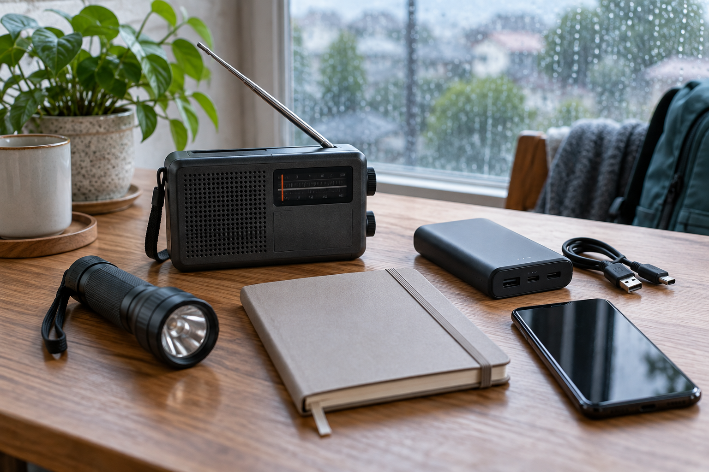

朝、いつもの連絡アプリを開いてもつながらない。電話もすぐには通じず、出勤できる職員が何人いるのか分からない。利用者様のお宅へ向かってよいのか、待つべきなのか。これは実際の事故報告ではなく、災害への備えを考えるための想定です。
訪問介護は、職員と利用者様が一つの建物に集まっている仕事ではありません。離れた場所の状況をつなぎながら、その日の支援を組み立てています。だから連絡が止まることは、判断の材料が届かなくなることでもあります。
いつもどおり訪問しようとする責任感は大切です。しかし、道路や周辺の状況が分からないまま、職員がそれぞれの判断で移動すれば、支援する側まで危険にさらされるおそれがあります。本人と家族の安全、地域の避難情報などを確かめ、事業所の災害時の方針に沿って動くことが土台になります。
厚生労働省は、介護施設・事業所向けに業務継続計画、いわゆるBCPの研修資料を公開し、訪問系サービス向けの資料も用意しています。それらを参考にしながら、自分たちの地域、連絡手段、職員の配置に置き換えて考えることが必要です。
平常時には、メッセージを送ればすぐ読んでもらえる感覚があります。災害時も同じとは限りません。電池切れ、通信の不具合、対応中で端末を見られない場合など、返事がない理由はさまざまです。
そこで、連絡先の一覧に加えて、確認状態を分ける工夫が役立ちます。例えば「連絡を試みた」「本人から返答があった」「次の対応を担当者が引き受けた」を別々に扱う。返答がない人を無事だとも危険だとも決めつけず、未確認として残す。この区別があれば、誰への確認がまだ必要なのかを見失いにくくなります。
記録する情報も、最初から詳しさを求めすぎない方がよいでしょう。誰から、いつ、何を確認できたのか。緊急の支援が必要か。どの方法なら連絡がつくか。判断に必要な最小限の情報をそろえ、必要以上の個人情報を広い範囲に流さないことを両立させます。
電話、メッセージ、別の連絡先を用意しても、全員が一斉に全部を使えば、同じ確認が重なります。誰が情報をまとめ、通常の手段が使えないときにどこへ切り替え、その担当者にも連絡できなければ誰が引き継ぐのか。順番と役割を決めておきたいところです。
その情報自体が、使えなくなったアプリの中にしかないのでは困ります。必要最小限の連絡情報を、権限と保管方法を決めたうえで、通信できない場合にも参照できるようにする。紙であれば持ち出しや紛失への対策も必要です。「デジタルか紙か」という選択より、障害が起きたときにも必要な人が使えるかを確かめます。
また、利用者様への支援の優先順位や訪問可否は、職員個人に抱え込ませる課題ではありません。平時から把握した支援の必要性、その時点の状況、関係機関との調整を踏まえ、定めた責任者が判断できる体制を用意します。
書類を読み合わせるだけでなく、冒頭の場面を置いて短い訓練をする方法があります。実際の個人情報を使わず、架空の職員と利用者を用意して、次の順に確認します。
十五分は実施方法の一例で、法令上の訓練要件を示すものではありません。大切なのは、正解を速く言うことより、計画のどこで手が止まるかを見つけることです。担当者の交代や端末の変更があれば、以前は使えた連絡方法も見直す必要があります。
便利な連絡手段を使うほど、普段は意識しなくて済む役割や順番があります。それを一度言葉にしておくことが、非常時の落ち着いた判断につながります。
BCPを完成した書類として保管するだけでなく、現場で試し、分からなかったところを直す。その繰り返しを通じて、「連絡がつかないので動けない」から、「安全を確かめながら、次に確認すべきことが分かる」へ進めていきたいと考えます。